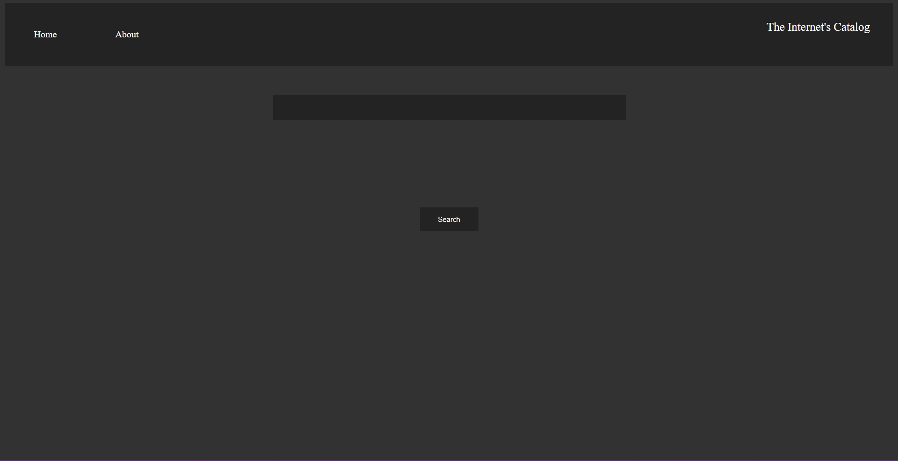

Chem++ was an idea of mine to help automate some of the processes of studying chemistry as well as inhance my understanding of GUIs
Have a Look!

Markus Frigaard
A portfolio
Blueport was a weekend project in the hopes of becoming familiar with the likes of JavaScript, HTML, and CSS. I learned how to use flex layouts, and how to automate processes on a website with javascript.
Have a Look!
Chem++ was an idea of mine to help automate some of the processes of studying chemistry as well as inhance my understanding of GUIs
Have a Look!
Java chess was my exploration into a new language: Java. In this project I recreated the game of chess all the while learning about GUIs and crafting my own algorithms to scan the board for "checks" and such.
Have a Look!
The internet catalog is a simple solution for online shoppers which takes them directly to the source of their favourite websites to find their wanted prodcuts. have alook Here
Markus Frigaard 2022